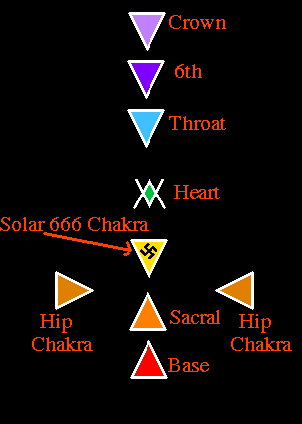
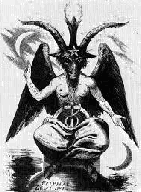
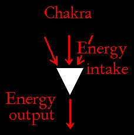
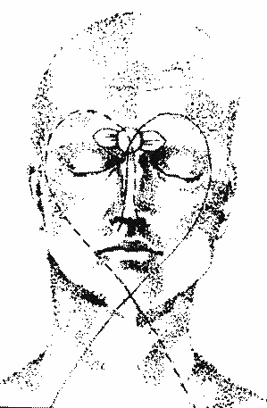
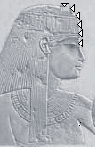
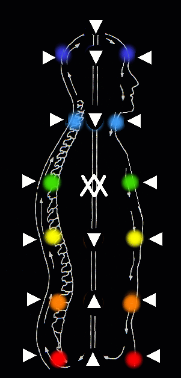
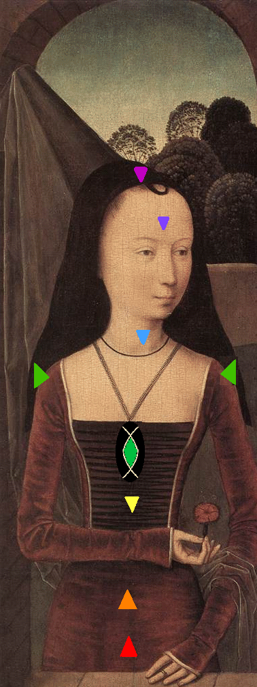
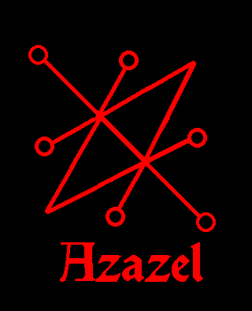

I want to make something very clear here. For any non-Satanists who visit this page, whether you are so-called "New Age" "Mystics" or whatever, if you proceed to read on, NEVER FORGET- THIS KNOWLEDGE CAME FROM SATAN AND THE EGYPTIAN GOD, THOTH. Thoth is with the Powers of Hell.
As with all spiritual knowledge, the cross has been hideously corrupted by Christianity. The equal armed cross represents the four corners/quarters and directions, such as when we summon the Four Crowned Princes of Hell during ritual.

| THE CROSS IS A CONCEPT and, as seen in many of the Demons' Sigils. The correct alignment of the chakras IS IN THE SHAPE OF AN INVERTED LATIN CROSS. THE CHRISTIAN CROSS IS A CORRUPTION AND A BLASPHEMY. If you stand facing a mirror, your chakras should line up in the shape of an inverted cross, with the Solar [666] chakra where the arms extend, as seen in the illustration immediately below on the right. |
The inverted cross has long been a symbol in Satanism and for very good reason. The third chakra; also known as the 'Solar' chakra, the 'Sun' chakra; is also the all-important '666' chakra, [as 666 is the kabbalistic square of the Sun]; is also represented by the swastika, which is an ancient symbol of the Sun. The 666 chakra, NOT the heart chakra, is the powerhouse of the soul. This is one of the main reasons that ancient religions, preceding Christianity, focused on the Sun. New Age and related teachings focus on the heart chakra so that everyone is deprived of spiritual power and worse. The heart chakra is neuter, and mainly connects the upper and lower chakras. Thor's Hammer is also an inverted cross, and is symbolic of this concept. The correct root vibration for the 6th chakra/pineal gland is "THA" [THAUM] and the root for the correct vibration for the 666 chakra is "RA" [RAUM]. When one combines both of these vibrations, as with a bind rune, the resulting vibration is "THOR." The Solar Chakra is the Grail of Lucifer, which holds the elixir of life. |  |
| Popular information readily available on the chakras is not only dangerous but also extremely inaccurate. The other three chakras are male and female pairs that should be matched as they work together. |  |
 | Now, with all of the repeated emphasis on the heart chakra by new age deluded fools [this is done purposely not only to keep people from true spiritual knowledge, but most importantly, from obtaining any serious spiritual power], when one advances enough in meditation and psychic abilities, one will find the yoni shaped heart chakra is the neuter. The yoni is in the shape of a vagina, illustrated by the Tarot Card at left. The Christians have corrupted this, turning it onto its side into that foolish and most annoying fish symbol, which again, is a blasphemy to true spirituality and is like everything else in that foul program, stolen, corrupted, and false. |
"...seven towers - the Towers of Satan [Ziarahs] -six of them trapezoidal in form, and one, the "center" on Mount Lalesh, shaped like a sharp, fluted point."
-- The Satanic Rituals by Anton LaVey
The above excerpt is also an allegory, as the center is the odd one out, the heart chakra. It does have power, but not the power of the strongest chakra of the soul, the '666' chakra of the Sun. The powers of the heart chakra are minimal. This is why the enemy is always touting it in the mainstream books, and in the new age dogma out there that is readily available to the public.
The energy uptake of each chakra is at the wide end and the energy output is at the point, also known as the 'bindu.'
|  |
All one needs to do is to turn the solar 666 chakra so the point [bindu] is facing DOWN. This is the swastika chakra, the Sun chakra. All Pagan religions preceding Christianity focused intensely upon the Sun. This is the powerhouse of the soul. Thor's Hammer was originally in the shape of an inverted cross. Our earliest beginnings and life come from our naval, and the Sun chakra, the giver of power and life is centered behind the naval. This is where our main store of life-force/witchpower/vril/chi is located. The Sun chakra is paired with the 6th chakra and third eye, also known as the 'command center' which is female.
Now, popular writings tout the heart chakra as the 'seat of emotions.' Again, this is another major misconception. The throat chakra is the seat of emotions. When we are sad and about to cry, the feeling comes from the throat, not the heart. This is often the same regarding happiness. Be aware of this. Both emotions come from the throat chakra.
|  | The all popular heart shape; again, this is not of the heart. Its being touted as a symbol for the heart is again, another corruption. This is to mislead you. The serpents cross, these are symbolic of the ida and pingala nadis of the soul. They cross on the throat chakra and swoop in the shape of a perfect heart to meet at the tip of the nose, forming a heart shape across the face. The popular arrow through the heart symbol is for 'fixing the energy' representing the risen Serpent of Satan. |
The number 666, the inverted cross, and all symbols of Satan are extremely sacred and carry a hidden message.
Now, when directing energy as you would for spell work, and other workings of the mind, the chakras can be temporarily reversed so their points are facing out to deliver the energy. Remember, never connect with any negative energy, such as when working black magick. In other words, the negative energy should never run through you, but be external at all times. When working with positive energy, such as attracting your desires, it is favorable to point the chakras out and connect. Always remember to correctly realign your chakras after any work. Incorrect alignment of the chakras reduces your witchpower.
Research and revelation from Thoth has revealed the true 8th and 9th chakras are the shoulder chakras. Opening these will align the soul and drastically open energy pathways to the palm chakras, greatly empowering them. To open your shoulder chakras, all you need to do is to visualize them as in the illustration on the right. Focus and meditate on them for a few minutes. A feeling of aching, and/or pressure is a positive sign that you have successfully opened them. This feeling can extend to your arms and can feel sort of like they are falling asleep. When the shoulder chakras are fully empowered, the wings of the soul manifest. |
Always remember, when your chakras have been successfully opened and are active, you will feel them. This sensation is usually a feeling of pressure, a slight aching or tingling. Correctly aligning the chakras will drastically increase spiritual your power. 1. Begin with the base chakra and turn the cone so the point is upwards, |  |
|  |  |  Azazel's Sigil is also representative |
More Important Information- Continued
© Copyright 2007, 2013, Joy of Satan Ministries;
Library of Congress Number: 12-16457

BACK TO SATANIC POWER MEDITATION MAIN PAGE